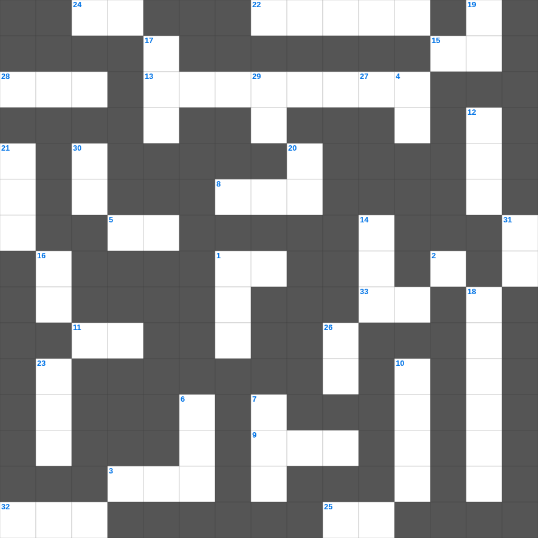

레위기: 정결한 생활
📌 서비스 정의
십자가로세로는 교회 주보와 주일학교에서 사용할 수 있는 성경 기반 가로세로 퍼즐 서비스입니다. 성경 인물, 사건, 핵심 구절을 바탕으로 제작되었습니다. 온라인 풀이 및 인쇄 기능을 제공합니다.
📖 레위기란?
레위기는 제사와 제물, 제사장의 역할, 정결법과 거룩한 생활에 대한 하나님의 말씀을 담고 있습니다. 이스라엘 백성이 거룩한 민족으로 살아가기 위한 율법이 기록되어 있으며 총 27장입니다.
📚 레위기의 주요 사건·주제
다섯 가지 제사 제도 · 제사장 위임식 · 정결법과 부정한 음식 · 속죄일 규례 · 희년 제도
레위기를 주제로 한 레위기 성경공부 자료입니다. 35개의 단어를 맞춰보세요! 가로세로 낱말 퍼즐 형식으로 레위기의 핵심 내용을 재미있게 복습할 수 있습니다.

📝 가로 힌트
1. 곳곳에 기근과 이것이 있으리니
3. 엘리야가 바알 선지자들과 대결한 산
5. 하나님께 예물을 드리는 시간
8. 예수님이 십자가를 지고 오르신 언덕
9. 이사악의 아내
11. 이스라엘아 들으라 (신명기 6:4)
13. 베드로가 환상을 본 지붕
15. 믿음의 이것으로 악한 자의 화전을 소멸함
16. 세상 죄를 지고 가는 하나님의 어린 이것
22. 히스기야 왕의 수명이 15년 연장됨
24. 네 이것을 공경하라
25. 할 수 있거든이 무슨 말이냐 믿는 자에게는 이것치 못할 일이 없느니라
28. 죄를 속하기 위해 드리는 제사
32. 기생 라합이 창문에 매단 표식
33. 천국은 밭에 감추인 이것과 같으니
📝 세로 힌트
1. 언약궤를 모셔두는 가장 거룩한 장소
2. 진리의 허리띠와 평안의 복음의 이것
4. 초대 교회에서 구제를 위해 세운 일곱 이것
6. 예수님이 변화되신 산
7. 종려나무 성읍이라 불리는 가장 오래된 성
10. 성경 전체 권수 (신약+구약)
12. 야곱이 라반을 피해 도망치다 세운 돌기둥
14. 바울이 강가에서 루디아를 만난 성
16. 오래 참음, 자비, 이것
17. 사드락과 친구들이 던져진 곳
18. 제사장의 관에 붙인 금패 글귀
19. 이스라엘 열두 지파를 상징하는 보석들
20. 예수님을 판 제자
21. 여호수아가 요단강을 건널 때 앞세운 것
23. 최후의 만찬에서 떡과 포도주를 나누심
26. 단련하신 후에는 내가 이것 같이 나오리라
27. 너희는 먼저 그의 나라와 그의 이것을 구하라
29. 기드온의 양털 시험
30. 예수님의 육신의 아버지
31. 무지개를 통해 주신 하나님의 약속
🧑🏫 교회 교육 자료 활용
이 퍼즐은 주일학교 교재 추천 자료로 활용할 수 있고, 주일학교 주보에 넣기 좋은 분량으로 구성되어 있습니다. 수업용 주일학교 교안에 활동지로 붙이거나, 예배 후 복습용 주일학교 공과교재로 바로 사용할 수 있습니다.
🏷️ 키워드
레위기 성경공부 자료, 레위기, 십자가로세로, 성경퀴즈, 말씀퀴즈, 가로세로퍼즐, 주일학교 교재 추천, 주일학교 주보, 주일학교 교안, 주일학교 공과교재